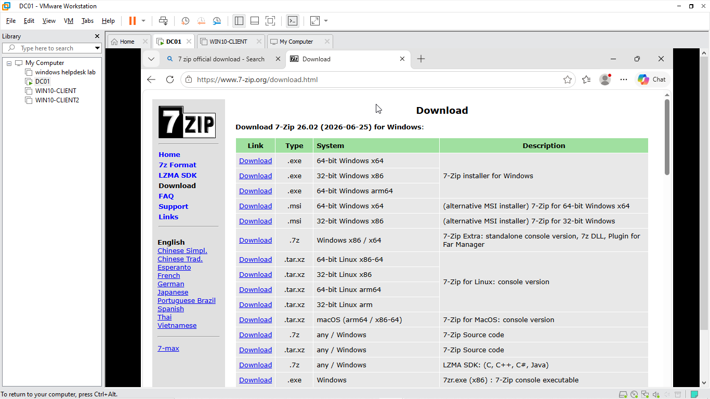
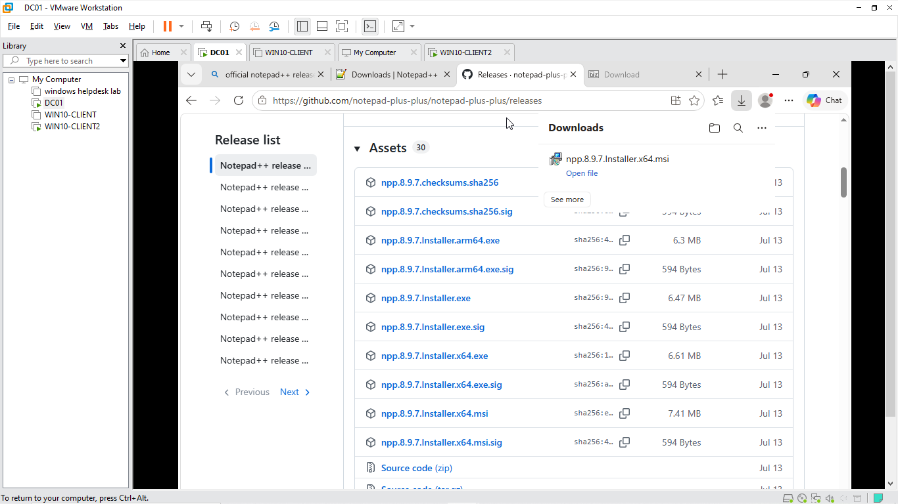

Project Overview
This lab demonstrates the deployment and installation of Windows software using MSI packages. The primary deployment example uses 7-Zip, followed by a second deployment of Notepad++ to demonstrate that the process can be applied to multiple applications.
The software was downloaded, deployed, installed, and verified successfully within the Windows Server lab environment.
Objective
The objective of this lab was to gain practical experience with Windows software deployment using MSI installation packages and verify that the deployed applications function correctly.
7-Zip MSI Deployment
7-Zip was selected as the primary software deployment example. The 64-bit MSI installer was obtained and used to install the application within the Windows Server lab environment.

Deployment Process
- Obtained the 64-bit 7-Zip MSI installer.
- Transferred the MSI package into the lab environment.
- Executed the MSI installer.
- Completed the software installation.
- Opened 7-Zip to verify that the installation was successful.
7-Zip Deployment Video
Verification
After installation, 7-Zip was launched successfully. This confirmed that the MSI package had installed correctly and that the application was operational.
- Installation completed successfully.
- Application launched successfully.
- 7-Zip was available and operational after deployment.
Skills Demonstrated
- Windows software deployment
- MSI package installation
- Windows Server administration
- Application installation and verification
- 64-bit software/package selection
- Basic software deployment troubleshooting
- Virtual machine administration
Additional Software Deployment Example
To demonstrate that the deployment process is not limited to a single application, the same approach was used to deploy Notepad++ using its MSI installation package.

Notepad++ Deployment Video
Notepad++ was successfully installed and verified, demonstrating the ability to repeat the MSI software deployment process with different applications.
Key Takeaway
This lab demonstrates practical experience with Windows software deployment, MSI packages, application installation, and post-installation verification. Deploying multiple applications demonstrates that the process can be applied consistently across different software packages.